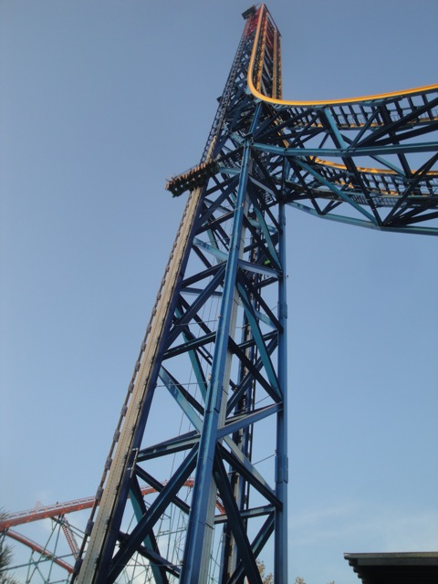
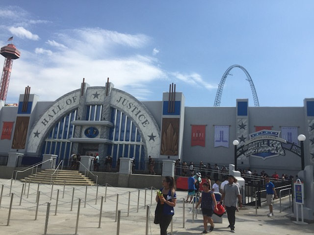
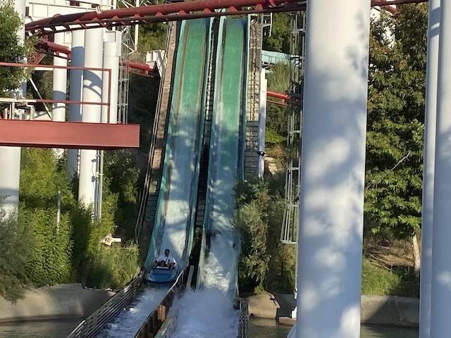
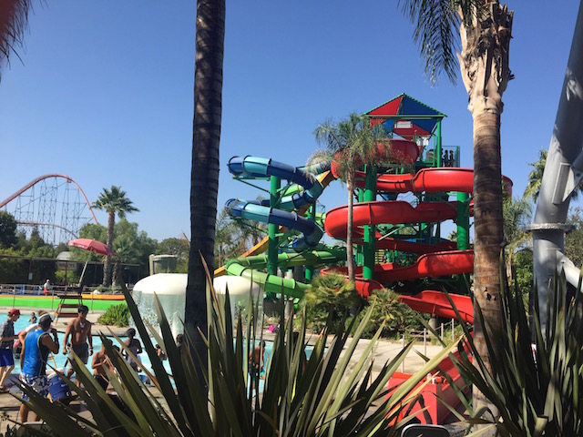
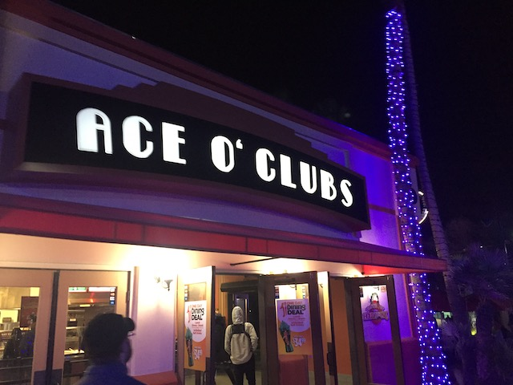
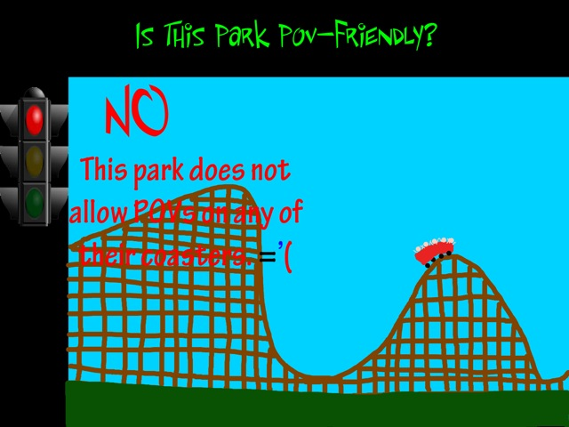

Six Flags Magic Mountain is one of the most popular amusement parks in the world and is widely known for it's roller coaster collection, hosting the most roller coasters in the world. And yeah, Six Flags Magic Mountain has a wide variety to choose from. Now Six Flags Magic Mountain is a park that I am VERY familiar with. I took my first visit to Six Flags Magic Mountain in 1999 and was EXTREMELY satisfied with it. I was so satisfied that after getting 2000 season passes, going to SFMM became a hobby. In fact, Six Flags Magic Mountain and RCT1 sparked my Roller Coaster Enthusiasm. I also worked at the park for 2.5 years, so I am really familiar with the park both from a guests point of view, and from an employee's point of view. The roller coasters are fun and all, but my view on the park is kind of mixed. On the one hand, this park really frustrates me as I know so many ways for the park to improve and they're not taking my ideas. You all know about their roller coaster selection, but the park isn't the best outside the coaster department. Though to be fair, that has been changing over the years with Lex Luthor, Crazanity, and Justice League. The operations have definetly been going downhill since the 2010s. Coming here so often, I often get bored with the park. Riding something just seems to be a way for me to kill some time nowadays. But that's just me being a local and this being my home-park. That's not the park's fault, and it wouldn't be fair for me to judge the park based on that. But on the other hand, I feel a deep connection to the park. It's the source for like 30% of all my childhood memories. I spend so much time here, that I'd essentially call it my 2nd home.
Here are the reviews of all the Flat Rides at Six Flags Magic Mountain. Well, lets just get the obvious out of the way. They have Lex Luthor, the 2nd tallest (Six Flags Great Adventure beat them in the same way they beat Top Thrill Dragster) drop tower in the world. And yeah, ITS FREAKING AWESOME!!!! It's big and yeah, it's fun riding normally. But look straight down if you really want to get a thrill out of Lex Luthor. It's this position, as well as the height, that gives it the #7 spot on our Top 10 Drop Towers List. Now there's one other flat ride that is worth your time while @ Six Flags Magic Mountain. Crazanity. This is the parks giant frisbee. Nowadays, these things are not unique. Especially in a Six Flags Park. Seriously, these things have spread like wildfire at Six Flags parks. But that's fine with me as I freaking love these things! Hell, they make our Top 10 Flat Rides List. Who would've thought one of those would land at Six Flags Magic Mountain. The swing on those things is just so good! Yeah, the one here is slightly bigger, and while it looks bigger, it rides the same as all the others. But hey. Fine with me. Those giant frisbees are awesome. Now onto the forgettable flat rides. The First Flat Ride up is Bucaneer. This is just your ordinary Pirate Ship. Up next is Swashbuckler. I've always thought it was weird that Six Flags Magic Mtn had the Carnival Style Chairswings while all the other parks had Modern Chairswings. Up next is Wonder Womans Lasso. Just a typical Roundup. And next up is The Flash. This ride literaly walked straight out of a carnival. Though, I must admit, I really do like the makeover that The Flash and Wonder Womans Lasso got during the transition to D.C Universe. And then there's the Scrambler. While it's just a Scrambler, it's still a fun ride. So overall, Six Flags is lacking in the Flat Ride Department. But Lex Luthor and Crazanity are certainly steps in the right direction. =)

Make sure you look down on this ride. =)
Dark Rides
Yep. I know most people thought it would never happen. A dark ride? At a park like Six Flags Magic Mountain? Land where they don't care about literally anything except for roller coasters? Yep. They added one. Granted, they only added a Justice League. Which if you really think about, it's nothing special. These things are popping up at nearly all the Six Flags parks, since Six Flags is now on a "CLONE EVERYTHING!!!!" spree. So I was so burned out by these that I didn't have high expectations. But it's a really good dark ride. You not only shoot around Metropolis, fighting off both Lex Luthor and the Joker, but it also has a lot of spinning fun, that you find on dark rides, such as Toy Story Mania. It really works, and honestly, they have a little bit of falling action, where they really make it feel like you're gliding. Of course, the technology is not on par with Spiderman, or even Transformers. This is not one of those rides. But for a Six Flags dark ride, this is really going above and beyond. I am definetly impressed with all that they are doing and am kind of glad that these rides are popular. Definetly check it out while at Six Flags Magic Mountain.

It may be a clone, but all the Metropolises across America need to be saved!
Water Rides
Here are the reviews of all the Water Rides at Six Flags Magic Mountain. Six Flags Magic Mountain has an OK water ride selection. They have a log flume called Jet Stream. Jet Stream is an OK log flume. Its not that long and only one has one decent sized drop. There's also Roaring Rapids. This River Rapids ride may not have a good layout since it just goes in a circle, but boy does it get you WET!!! Water will come up and SOAK YOU FROM THE INSIDE OUT!!! So if you want to get wet, go on Roaring Rapids (And say hello to my replacement at P2). They ended up getting rid of their best water ride, Log Jammer. It was an OK flume with 2 fun drops and a nice view of Goldrusher. But the real fun was at the water cannons. Soaking people on Log Jammer was so awesome, as you can see here and here. I'm still hoping they'll move the cannons to Jet Stream (They're not gonna do it) =(. So, I'll just have to soak people at other parks. But be warned, on a hot summer day, the lines for these water rides can grow very long!

Far from the best water ride, but I have a soft spot for Jet Stream.
Water Park
(Six Flags Hurricane Harbor)
Here is the review of Six Flags Hurricane Harbor. The adjacent water park to Six Flags Magic Mountain. Now this technically is a seperate entitie as it has a seperate admission so you can't just go in whenever you want (Lame. They should really change that). However I still try and visit every year thanks to getting the Season Pass (it's been harder to find that time recently). While there's nothing particuarly exciting about this water park, I just really like it for some reason. Their water slide collection, while it may be pretty ordinary, is pretty kickass.
The Major Waterslides
There is a link to a review of all the Major Waterslides at Six Flags Hurricane Harbor.
Here are the reviews of all the other water slides at Six Flags Hurricane Harbor. Well, the best waterslide not featured in the Major Waterslide review is Python Plunge. It's fun and all. It's pretty steep and it's pretty steep. But the one bad thing about it is that it's not as good as what it replaced, Gator Gorge. The two are very similar, but aside from being enclosed, Gator Gorge was steeper, bigger, faster, and better. And it was a shame to see it go. But hey, there's a clone of it down at Raging Waters. But on the bright side, the twisty slide in the complex is much better than Gecko Gully that came before it. And it's still a lot of fun. Another fun slide at Hurricane Harbor is Tiki Falls. It's fun because you can't see what's going on. But I just have to say, DON'T GO ON THE GREEN VERSION!!! Another slide would be Lost Temple Rapids. This is a family raft ride. The amount of fun you have on this slide soley depends on who you ride it with. When I rode it with Isaac and Elissa, we were going so slow it wasn't even funny. However, when Cody and I asked some fat chicks to ride with us, we went flying! Cody even fell off the raft it was so freaking insane!!! And finally, we have Lightning Falls. Lightning Falls is a fun waterslide. It's kind of like Lost Temple Rapids as it sways from side to side until you land in the pool.

Python Plunge is fun (the straight orange one in the background). But I miss Gator Gorge.
Dining
Here are the reviews of all the resteraunts at Six Flags Magic Mountain. At Six Flags Magic Mountain, there are never certain resteraunts I go to each time I visit. I just eat wherever. Hell, For a while, we would just walk down to the Wendys or local gas station. But we don't even do that anymore. Nowadays, we just drive and eat somewhere in Valencia. I suppose the best food in the park would be Ace O' Clubs. Nothing special. But this replaced a BBQ place, JB'S BBQ which was much better. And that itself replaced an even better BBQ called Longhorns, which served much higher quality BBQ. Unfortunetly, that place had to close since the resteraunt went out of buisness. =( #BBQception While Six Flags Magic Mountain does have typical amusement park crap and high prices for that crap, if you're lucky, they may give you decent food.

Meh. Nothing special.
Theming and Other Attractions
Here are the reviews of all the other stuff at Six Flags Magic Mountain. There's not really any theming at all at Six Flags Magic Mountain. I will say that the landscaping at Six Flags Magic Mountain is nice though. It's surrounded by mountains and it just looks really cool. Bugs Bunny World is a decent childrens area with a decent kiddy coaster, Canyon Blaster (See Review for more details), plus 3 other kiddy coasters. I know Six Flags Magic Mountain used to have (And I mean used to as in 2008. Not in 1978) one of the most unique thing about Six Flags Magic Mountain. The Sky Tower Museum. Why they got rid of it, I don't know. But it pissed me off. So yeah. There's not much else to do at Six Flags Magic Mountain.
In Conclusion
Six Flags Magic Mountain is a great park to visit if you're into crazy roller coasters. There are lots of thrills there like X2, Twisted Collosus, Tatsu, Riddlers, Goliath, and MUCH MORE!!! Unfortunetly, if you're interested in anything else besides roller coasters, then you've come to the wrong park. The flat ride collection (excluding Lex Luthor and Crazanity) is poor, the food is average, and I tried my best in operations back when I worked here, but operations here aren't exactly the best. Again, its great for roller coasters, but not so good for everything else.
Enthusiast FAQs.
*Are there kiddy coaster restrictions? - No, No, No, and Yes. Roadrunner Express, Canyon Blaster, and Speedy Gonzales Hot Rod Racers don't have any restrictions. So you're good. However, there is a 4th kiddy coaster called Magic Flyer that has a maximum height requirement of 54 inches. So you're never gonna get that credit (Luckily I rode it when I was really little, so I got it). As far as I'm concerned, that ride doesn't exist.

Tips
*Hit the back of the park in the morning to avoid RCT Syndrome.
*If you want to avoid crowds all together, Go during a Sunday during the Off Season. (Just DON'T go on a Saturday!)
*Wear pants or shorts with zippered pockets to keep your stuff safe.
*X2 has a sweet spot where the line is the shortest between 2:30 and 4:30.